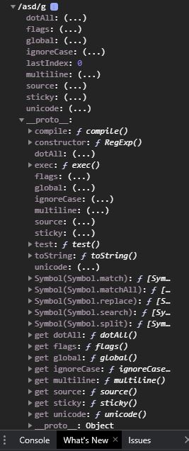
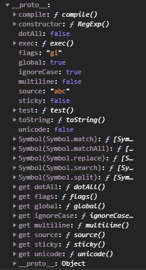
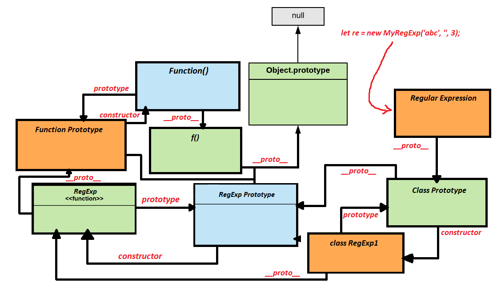

Regular expressions are patterns used to match character combinations in strings. In JavaScript, regular expressions are also objects. These patterns are used with the exec() and test() methods of RegExp, and with the match(), matchAll(), replace(), replaceAll(), search(), and split() methods of String.
There are two ways you can construct a regular expression
One way is to use a regular expression literal, which consists of a pattern enclosed between slashes, like this: let re = /ab+c/
Regular expression literals provide compilation of the regular expression when the script is loaded. If the regular expression remains constant, using this can improve performance.
The second way to construct a regular expression is by calling the constructor function of the RegExp object, as follows: let re = new RegExmp('ab+c').
Using the constructor function provides runtime compilation of the regular expression, Use the constructor function when you know the regular expression pattern will be changing, or you don't know the pattern and are getting it from another source, such as user input.
Simple patterns are constructed of characters for which you ant to find a direct match. For example, the pattern /abc/ matches character combinations in strings only when the exact sequence "abc" occurs (all characters together and in that order).
JavaScript Code:
let re = /abc/g; let string = "Hello abc!"; string = string.replace(re, "World"); document.write(string);
Outcome:
About the g next to the /pattern/, this is what we call a global flag, there are more kind of flags out there that you can use, but I'm gonna speak more about flags later.
When the search for a match requires something more than a direct match, such as finding one or more b's, or finding white space, you can include special characters in the pattern. For example, to match a single "a" followed by zero or more "b"s followed by "c", you would used the pattern /ab*c/. The * after "b" means 0 or more occurrences of the precending item, here is an example:
JavaScript Code:
let re = /ab*c\*/g; let string = "Hello abbbbbbbc*!"; string = string.replace(re, "World") document.write(string);
Outcome:
As you can see, the second * was rendered as a normal character, and that's because I used backslash \, you can use backslash to cancel special characters and make them work as normal characters.
I will go in more depth about the different groups of special characters in the following sections:
Assertions include boundaries, which indicate the beginnings and endings of lines and words, and other patterns indicating in some way that a match is possible (including look-ahead, look-behind, and conditional expressions).
First, here is a list of all the Boundary-type assertions:
Here is an example using the ^ character:
JavaScript Code:
let re = /^a/g; let string = "aello a World!"; string = string.replaceAll(re, "H"); document.write(string);
Outcome:
Here is an example using the $ character:
JavaScript Code:
let re = /a$/g; let string = "Hello a" string = string.replace(re, "World!"); document.write(string);
Outcome:
JavaScript Code:
Now, the hardest to understand are probably the /b and /B characters, so let me explain these ones a little better.
\b matches the pattern at the beggining or end of a word.
\B does the opposite, meaning, it does not match the pattern at the beginning or end of the word.
Here are few examples to help you understand:
JavaScript Code:
let string = "catmania thiscat thiscatmania"; // Case1: At the beginning of each word: let result = string.replace(/\bcat/g, "CT"); document.write(result); // Case2: At the end of each word: result = string.replace(/cat\b/g, "CT"); document.write("<br>" + result); // Case3: Not in the beginning: result = string.replace(/\Bcat/g, "CT"); document.write("<br>" + result); // Case4: Not in the end: result = string.replace(/cat\B/g, "CT"); document.write("<br>" + result); // Case5: Not in the beginning nor end: result = string.replace(/\Bcat\B/g, "CT"); document.write("<br>" + result);
Outcome:
As you can see, the last cat was not matched when I used \B, even though it has no characters before or after it, that's because, if it has non-word characters both before and after then it doesn't get matched.
Let's now learn some of the other assertions that exist, here is a list I found online:
Here is an example for the lookahead assertions:
JavaScript Code:
let string = "Hello a!<br>"; let result = string.replace(/a(?=!)/g, "World"); document.write(result); result = string.replace(/a(?!example)/g, "World"); document.write(result);
Outcome:
And here is an example for the lookbehind assertions:
JavaScript Code:
let string = "Hello Wa!<br>"; let result = string.replace(/(?<=W)a/g, "orld"); document.write(result); result = string.replace(/(?<!example)a/g, "orld"); document.write(result);
Outcome:
Character classes distinguish kinds of characters, such as, for example distinguishing between letters and digits.
Let's create some projects now, the following code will match and create an array of all the numbers that contain 4 digits in a row, if they contain more or less they won't match.
JavaScript Code:
let re = /\b\d{4}\b/g; // \b indicates a boundary (i.e. do not start matching in the middle of a word) // \d{4} indicates a digit, four times // \b indicates another boundary (i.e. do not end matching in the middle of a word) let numbers = "015 354 8787 687351 3512 8735"; let result = numbers.match(re); document.write(result);
Outcome:
Another project now, let's take a string and match all the words starting with the letter a or A, then create an array of them using the match method:
JavaScript Code:
let re = /\b[aA]\w+/g; // \b indicates a boundary (i.e. do not start matching in the middle of a word) // [aA] indicates the letter a or A // \w+ indicates any character *from the latin alphabet*, multiple times let string = "I'm Alex, and I want to become a web developer."; let result = string.match(re); document.write(result);
Outcome:
Groups and range indicate groups and ranges of expression characters.
So, I there is some explaining that needs to be done about capute groups, first, take a look at the example below::
JavaScript Code:
let re = /(\w)\d(\w)/g; let re2 = /(\w)\d(\w)/; let string = "A1A B2B C3C"; string1 = string.match(re); string2 = string.match(re2); string3 = string.matchAll(re); document.write(string1 + "<br>"); document.write(string2 + "<br>"); document.write(string3.next().value + "<br>"); document.write(string3.next().value + "<br>"); document.write(string3.next().value + "<br>");
Outcome:
Alright, so at first, when I tried to match the string using global flag, the string was matched but the capture groups couldn't be accesed, when I tried to do the same but without the global flag only the first match was matched, and the capture groups were also added to the array, to match all matches and have the capture groups too I used matchAll which returned an iterator, that itarator can iterate through all the matches and returns arrays of the matched text and capture groups.
I however, prefer to use the exec() method instead, like in the example below:
JavaScript Code:
let re = /(\w)\d(\w)/g; let string = "A1A B2B C3C"; document.write(re.exec(string) + "<br>"); document.write(re.exec(string) + "<br>"); document.write(re.exec(string) + "<br>"); document.write(re.exec(string));
Outcome:
This works similar to matchAll iterators, but it's shorter, I could get all matches and capture groups easily using a really simple code like this:
JavaScript Code:
let re = /(\w)\d(\w)/g; let string = "A1A B2B C3C"; let matches = []; let groups = []; let results; while(results = re.exec(string)){ matches.push(results[0]); groups.push(results.slice(1)); } document.write(matches + "<br>"); document.write(groups[0] + "<br>"); document.write(groups.slice(1));
Outcome:
So, let me show you a nice example of how capture group can actually come in handy in certain situations, let's say we have names, listed like this: Alex, Gkiafis Christina, Classified, etc, using capture group, I can change the position of the last and first name, like in the example below:
JavaScript Code:
let re = /(\w+),\s+(\w+)/g; let string = "{Alex, Gkiafis} {Christina, Koresu}" let result while(result = re.exec(string)){ document.write(`${result[2]} ${result[1]} <br>`); }
Outcome:
Capture groups can be useful in other ways too however, for example, using the \number character, you can reference them, like this:
JavaScript Code:
let re = /(a)b\1/g let string = "This will match aba"; document.write(string.match(re));
Outcome:
When you have many captured groups referencing them by \number may be a little hard, that's why you can also create named captured groups with /(?<name>x)/ and then reference them using /\k<name>/, like in the example below:
JavaScript Code:
let re = /(?<example>a)b\k<example>/g let string = "This will match aba"; document.write(string.match(re));
Outcome:
Quantifiers indicate numbers of characters or expressions to match.
Most of the quantifiers I listed above are easy to understand and I don't really need to talk more about them, let's talk about the ones I consider the hardest to understand, first of all, let's understand the ? character, if used alone, it means a specified character or group of characters may or may not exist, here is an example:
JavaScript Code:
let re = /a(?:example)?bc/g; let string = "This will match abc and aexamplebc"; document.write(string.match(re));
Outcome:
What happens however when we use the ? character infront one of the quantifiers? Lets take a look:
JavaScript Code:
if(true){ let re = /a(?:example)??bcD??/g; let string = "This will match abc and aexamplebcD"; document.write(string.match(re)); }
Outcome:
So, something weird happened, the example text was matched, but the D at the end wasn't. Why is that? That's because, as I said before in the list, the ? character makes the quantifier become non-greedy, meaning, it will try to match as less of the string as possible. Since bc had to be matched, example which was before bc was also forced to be matched, after that however, the D didn't need to be matched.
Let's try some more examples:
JavaScript Code:
if(true){ let re = /co*?kie\d*?/g; let re2 = /co+?kie\d+?/g; let re3 = /co{2,}?kie\d{2,}?/g; let string = "cookie12 cooooookie1233"; document.write(string.match(re) + "<br>"); document.write(string.match(re2) + "<br>"); document.write(string.match(re3) + "<br>"); }
Outcome:
Regular expressions have six optional flags that allow for functionality like global and case insensitive searching. These flags can be used seperately or together in any order, and are included as part of the regular expression.
| Flag | Descriptipion | Corresponding property |
|---|---|---|
| g | Global Search | RegExp.prototype.global |
| i | Case-insensitive search | RegExp.prototype.ignoreCase |
| m | Multi-line search | RegExp.prototype.multiline |
| s | Allows . to match newline characters | RegExp.prototype.dotAll |
| u | "Unicode" treat a pattern as a sequence of unicode code points | RegExp.prototype.unicode |
| y | Perform a "sticky" search that matches starting at the current position in the target string. | RegExp.prototype.sticky |
To include a flag with the regular expression, use this syntax: var re = /pattern/flags; or this syntax: var re = new RegExp('pattern', 'flags');.
When you aren't using a flag, the regular expression will only match the first match, like in the example below:
JavaScript Code:
let re = /f\w{2}/; let string = "fo fee faa"; document.write(string.match(re));
Outcome:
If you used the g flag, then all matches would be matched, like this:
JavaScript Code:
let re = /f\w{2}/g; let string = "fo fee faa"; document.write(string.match(re));
Outcome:
If you want the pattern to be case insesitive AND match globally, you can write //gi, like this:
JavaScript Code:
let re = /F\w{2}/gi; let string = "fo fee faa"; document.write(string.match(re));
Outcome:
As you can see, in the pattern I wrote F capitalized, but it still matched fee and faa.
The s flag can be used so that . matches newline characters too, like \n for example, here is an example to help you understand:
JavaScript Code:
let re = /.+/; let re2 = /.+/s; let string = "Content flows\ndownward and\ndownward"; document.write(string.match(re) + "<br>"); document.write(string.match(re2));
Outcome:
As you can see, in the first pattern it stopped matching after it met the \n, while in the second pattern it matched everything.
The m flag stands for multiline mode and serves to make the boundary tokens ^ and $ match the beginning and end of each line:
JavaScript Code:
let re = /^A\w*/g; let re2 = /^A\w*$/gm; let string = "Alex\nArgiris"; document.write(string.match(re) + "<br>"); document.write(string.match(re2));
Outcome:
Often times, we might want an expression to start it's searching routine, within a given string, from an index other than 0. In other words, we might want to search for matches in the string from a custom position, like 2, 3, 4 and so on.
This can be accomplished using the y flag. The y flag stands for sticky searching. It makes an expression search from the position specified in the lastIndex property. The lastIndex property can be found in the regular expression object, here is an image of it:
JavaScript Code:
let re = /asd/g console.dir(re);
Outcome:
Remember however, the y flag tells the regular expression to search for a match at lastIndex and only at lastIndex (not earlier or later in the string). So, let's give the y flag a try now and see if it works:
JavaScript Code:
let re = /A\w+/y; let re2 = /A\w+/y; re2.lastIndex = 5; let string = "Alex Argiris"; document.write(string.match(re) + "<br>"); document.write(string.match(re2));
Outcome:
The RegExp object is used for matching text with a pattern.
There are two ways to create a RegExp object, a literal notation and a contructor.
The following three expressions create the same regular expression object:
JavaScript Code:
let re1 = /abc/gi; // literal notation let re2 = new RegExp('abc', "gi") // constructor with string pattern as first argument let re3 = new RegExp(/abc/, "gi") // constructor with regular expression literal as first argument (Starting with ECMAScript 6) let string = "This will match abc"; document.write(string.match(re1) + "<br>"); document.write(string.match(re2) + "<br>"); document.write(string.match(re3));
Outcome:
Now, let's take a look at what's inside the regular expression object's prototype:
JavaScript Code:
let re2 = new RegExp('abc', "gi"); console.dir(re2);
Outcome:
Let's talk about some of the methods of the regular expression object, the most basic one is probably the test() method, which executes a search for a match between a regular expression and a specified string and returns true if it finds a match else it returns false. This method is perfect for things like email verifications and stuff, where you need to check if an email has the @ character and stuff like this, here is an example:
JavaScript Code:
let re = /world/gi; let string = "Hello World!" document.write(re.test(string));
Outcome:
The RegExp.exec() method is pretty useful when you want to get the captured groups or when you want to be able to match and also get the index position of text. Here is an example:
JavaScript Code:
let re = /(\w)(\w)o/g; let string = "Poop, Shock"; let result; while(result = re.exec(string)){ document.write(`Found ${result[0]}, it's index position is ${re.lastIndex - result[0].length} \ and it's captured groups are the following: ${result.slice(1)} <br>`); }
Outcome:
The RegExp.prototype[Symbol.replace] method replaces some or all matches of a this pattern in a string by a replacement, and returns the result of the replacement as a new string. The replacement can be a string or a function to be called for each match.
This method is called internally in String.prototype.replace() if the pattern argument is a RegExp object. For example, the following two methods will return the same result:
JavaScript Code:
let re = /abc/; let string = 'Hello abc!'; document.write(re[Symbol.replace](string, 'World') + '<br>'); document.write(string.replace(re, 'World'));
Outcome:
This method exists for customizing replace behavior in RegExp subclass, as I will show you later.
If pattern argument is not a RegExp object, then String.prototype.replace() will not call it.
JavaScript Code:
class MyRegExp extends RegExp { constructor(pattern, flags, count) { super(pattern, flags); this.count = count; } [Symbol.replace](str, replacement){ // Perform @@replace |count| times var string = str; for(var i = 0; i<this.count ;i++){ string = RegExp.prototype[Symbol.replace].call(this, string, replacement); }; return string; } } let re = new MyRegExp('abc', '', 3); let text = "abc abc abc abc"; document.write(text.replace(re, 'replaced'));
Outcome:
Let me explain what the code does now, I created a class that extends the RegExp constructor, I used super() to add the pattern and flags properties from the RegExp constructor to our class and be able to define them while creating the class, then I rewrote the [Symbol.replace] method, which executes whenever string.prototype.replace() method is used with a regular expression, this allowed me to customize it's behavior, the two parameters it takes are defined when the string.replace() method is used, the str takes the value of the string and the replacement takes the value of the replacement string defined as the second parameter of the string.replace() method. I then created a variable and assigned it the string, then I made a loop, which uses the count property that you define while creating the regular expression to determine how many times to check the string, each time it checks the string it replaces the first match and updates the string with the new string, so that in the next iteration, the next match is matched, and so on, till the loop is over, then it simple returns the final string.
In order to better understand how the class extends the RegExp constructor, I made a picture to demostrate what the prototype tree of the regular expression I created above looks like:
Next method I wanna talk about is RegExp.prototype[Symbol.match]() method, work similarly to [Symbol.replace] however, this one is called when string.prototype.match() method is used with a RegExp pattern, also, it only takes one parameter, which is the string:
JavaScript Code:
let string = "Hello World!"; document.write(/W\w+/[Symbol.match](string));
Outcome:
Like [Symbol.replace], you can use a class to create custom behavior, like this:
JavaScript Code:
class MyRegExp extends RegExp { constructor(pattern, flags){ super(pattern, flags); } [Symbol.match](str) { let result = RegExp.prototype[Symbol.match].call(this, str); if (result == null){ return null; } else { return { group(n) { return result[n]; } } } } } let re = new MyRegExp('([0-9]+)-([0-9]+)-([0-9]+)', ''); let str = '2016-01-02'; let result = str.match(re); // String.prototype.match calls re[@@match] document.write(result.group(0) + "<br>"); document.write(result.group(1) + "<br>"); document.write(result.group(2) + "<br>"); document.write(result.group(3));
Outcome:
Let me explain now, just like before, we added the patern and flag properties to our class constructor, then we rewrote the [Symbol.match] method, this method is executed whenever string.prototype.match is used with a regular expression, and the string is passed in it as a parameter, so after we call the match method, we call the real [Symbom.match] method and assign the result into a variable named result, then we check if there is a match, if null is returned then we return null, else we return an object, with a group method, this group method we created takes a parameter, now, I want to mention that string.match returns an array, with it's first item being the match, and it's other items being the captured groups, remember however that this will not work if the global flag is used, I have talked about alternative ways to get the captured groups while using the global flag in the regular expressions section. Anyway, using the group method, we can later accees those array items, if you want to access the first captured group you simple write result.group(1), if you want to access the matched text then you can write result.group[0].
So, as I said, if you used the global flag the captured groups won't be returned, this could easily be solved with the RegExp.prototype[Symbol.matchAll] method, which returns an iterator, if you create an array of this iterator by writing Array.from(iterator) you can get an array, it's first item will be another array of the first matched text and it's captured groups, the second groups will be the next matched text and it's captured groups, and so on:
JavaScript Code:
class MyRegExp extends RegExp { constructor(pattern, flags){ super(pattern, flags); } [Symbol.match](str) { let result = RegExp.prototype[Symbol.matchAll].call(this, str); if (result == null){ return null; } else { return Array.from(result); } } } let re = new MyRegExp('([0-9]+)-([0-9]+)-([0-9]+)', 'g'); let str = '2016-01-02 | 100-200-300'; let result = str.match(re); // String.prototype.match calls re[@@match] result.forEach((x) => { x.forEach((x) => { document.write(`{${x}}`); }); document.write('<br>'); });
Outcome:
Custom behaviors can of course be made for other methods too, like split or search.
The RegExp.prototype[Symbol.split]() is called when when string.split() method is used with a regular expression, it is assigned two parameters, the first parameter is the string and the second parameter is the limit, here is an example:
JavaScript Code:
class myRegExp extends RegExp{ [Symbol.split](string, limit){ let array = RegExp.prototype[Symbol.split].call(this, string, limit); return array.map(x => `(${x})`); } } let re = new myRegExp('-', 'g'); let number = "111-222-333-444"; document.write(number.split(re, 3));
Outcome:
Something I didn't explain before is that you don't necessarily need to make a constructor, since the class is extending RegExp, if you don't add a constructor then the RegExp constructor will be used, which by default uses first parameter as pattern and second parameter as flags, the only reason you may need to use super() is if you want to create a new property, in which case, you have to use super() to add flags and pattern properies to your new constructor.
The RegExp.prototype[Symbol.search] takes one parameter, which is assigned the string, it works just like the rest so I'm not gonna make an example of this, since all it really does it return the index position of the matched text.
The split() method is used to split a string into an array of substrings, and returns the new array.
This method takes two parameters, the seperator which specifies the text, or the regular expression, to use for splittin the string. If ommited, the entire string will be returned, if you use "" as the first parameter, the string will be split between each character. The second paremeter is the limit, if for example you only want to split three items you can write 3, if this parameter is not specified there will be no limit.
JavaScript Code:
let string = "Bannana, ,Apple, , , ,Orange, Peach"; let re = /,[,\s]+/g document.write(string.split(re) + "<br>"); document.write(string.split(re, 2));
The replaceAll() method returns a new string with all matches of a pattern replaced by a replacement. The pattern can be a string or a RegExp, and the replacement can be a string or a function to be called for each match.
Right now, from what I read, this replaceAll method is still new and not well supported among the browsers, for browsers that don't support it, we are gonna use a regular replace method, which if used with a regular expression that has a global flag it works pretty similar to replaceAll method.
JavaScript Code:
let string = "abc abc abc"; if('replaceAll' in String.prototype){ document.write(string.replaceAll('abc', 'REPLACED')); } else { String.prototype.replaceAll = function(find, replace){ if(typeof(find) != "string"){ find = find.toString(); } let re = new RegExp(find, "g"); return this.replace(re, replace); } document.write(string.replaceAll("abc", "REPLACED")); }
Outcome: